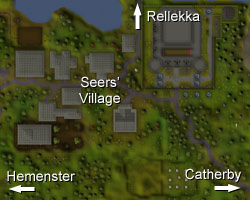
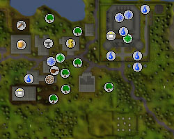
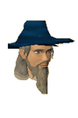
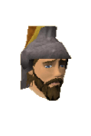
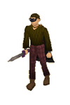

")
Seers' Village (Members)
Introduction | Location | Points of Interest | Personalities
Quests | Wanderers in the Lands of the Seers | Miscellaneous
Quests | Wanderers in the Lands of the Seers | Miscellaneous
Introduction

The town also plays host to Camelot, which has settled in RuneScape while it waits for its glorious return to England. In the meantime, the Knights of the Round Table are happy to wander about the grounds while they wait for a quest.
Location

The capital of Kandarin, East Ardougne and West Ardougne, lies far to the south-west of the Seers' Village.
To the north, beyond Sinclair Mansion, is Rellekka, home town of the Fremennik people.
Just east lies Catherby, and to the west, past the Baxtorian Waterfall, is the Tree Gnome Stronghold.
Points of Interest

There is also Camelot, an impressive castle filled with noble and chivalrous knights, as well as King Arthur and Merlin the wizard. If you have completed King's Ransom, you will have access to the knights' training room at the top of the castle.
Coal can also be brought to the village from a mine beyond McGrubor's Wood by using the coal trucks.
Personalities

King Arthur is the legendary king of England who, since retiring from ruling the nation and questing for the Holy Grail, has decided to settle in RuneScape. He is the very symbol of honour and chivalry.
|

Merlin was once the most powerful wizard in the world, but his powers have been greatly weakened by his clashes with Arthur's half-sister, Morgan le Faye. He is now imprisoned in a giant crystal, unable to aid King Arthur or the knights.
|
|
| King Arthur can be found in Camelot, pacing around the Round Table. | Merlin can be found in the top of the south-east tower of Camelot. |

Where would Arthur be without Lancelot, his most skilled knight? Possibly in better shape, as it was Lancelot that wooed Guinevere away from Arthur, leading to the King having a son, Mordred, with Morgan. Lancelot is a powerful knight, though, and Arthur is lucky to have his loyalty.
|

Before Arthur was recognised as King of England, he lived with Sir Kay's family and worked as Kay's squire. Kay wasn't particularly nice to Arthur then, but when Arthur was announced to be the true king of England, Kay was among the first to declare his loyalty.
|
|
| Lancelot can be found on the first floor of Camelot. | Sir Kay can be found in Camelot's courtyard. |

When the Green Knight came upon Sir Gawain he instructed Gawain to kill him with a single blow, which he did. The Green Knight, however, could not be killed so easily, and a year later Gawain had to return the favour. Luckily for Gawain, he was wearing a magic girdle that protected him.
|

Sir Lucan is one of King Arthur's most devoted knights. His devotion is such that, should King Arthur ever require it, he would gladly lay down his life.
|
|
| Sir Gawain can be found near the Round Table. | Sir Lucan can be found near the Round Table. |
|

Sir Palomedes is most famous for hunting the Questing Beast, a vile creature with the head of a serpent, the body of a leopard, the back legs of a lion, and the hooves of a hart. The Questing Beast nearly defeated Sir Palomedes, but his strength and skill saved him in the end.
|

Sir Tristram first came to Camelot having already defeated Sir Palomedes in a joust, and before he was admitted to the Round Table he also knocked Arthur from his horse in another joust. Sir Tristram is probably the finest jouster in the court, perhaps equalled by Sir Lancelot.
|
|
| Sir Palomedes can be found near the Round Table. | Sir Tristram can be found on the first floor of Camelot. |

Sir Pelleas was a bit of an unfortunate figure during his time in England. He fell in love with a woman who did not like him, and then was enchanted to fall in love with a sorceress. Now that he is in RuneScape, he is freed from such nastiness.
|

Sir Bedivere is King Arthur's oldest knight, and has aided him on more than one occasion. Together they slew the Giant of Mont St Michel, and it was Bedivere that returned the sword Excalibur to the Lady of the Lake.
|
|
| Sir Pelleas can be found on the first floor of Camelot. | Sir Bedivere can be found on the first floor of Camelot. |

The Poison Salesman aims to eventually be able to sell his poisons and other concoctions across RuneScape. His main method of salesmanship, though, seems to be his red hair and giving his products long names like 'Peter Potter's Patented Multipurpose Poison'.
|
Despite having an almost unpronounceable name, Phantuwti Fanstuwi Farsight is the leader of the Seers. This must mean that he is full of wisdom, but it's difficult to prove.
|
|
| The Poison Salesman can be found either in the town tavern, or at the road junction heading north from the Seers' Village. | Phantuwti Fanstuwi Farsight can be found in the seers' house, south of the tavern. |
Quests
The following quests can be started in the Seers' Village:
- The Elemental Workshop (Members)
- Merlin's Crystal (Members)
- Holy Grail (Members)
Wanderers in the Lands of the Seers
|

The highwayman is an odd sort of person; he seems to believe wearing a lot of black, covering his face with a mask, and crying 'Stand and Deliver!' will encourage people to give him money. On the plus side, killing him might get you a rather fetching black cape.
|

Unicorns are naturally attracted to the wisdom of the Seers, and to the woods nearby. They are generally pleasant creatures that are extremely unlikely to attack unless provoked.
|
|
| Highwaymen are usually near the crossroads north of the Seers' Village, on the way to Sinclair Mansion. | Unicorns can be found in the woods south of the temple. |
Miscellaneous
- There is a knife on the floor of the seers' house.
- Right next to the seers' house is another building in which someone has carelessly left some garlic.

More articles in
Cities and Towns
|
|